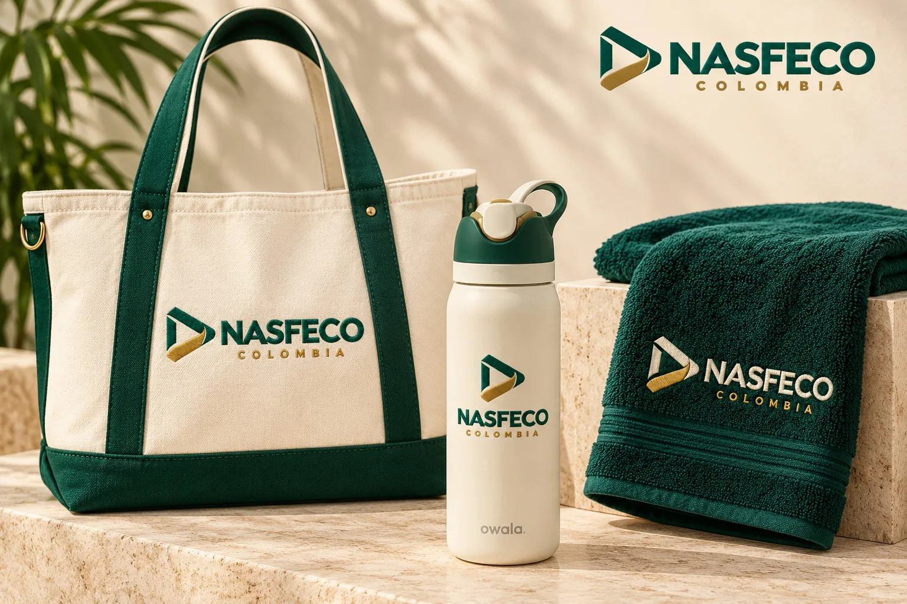
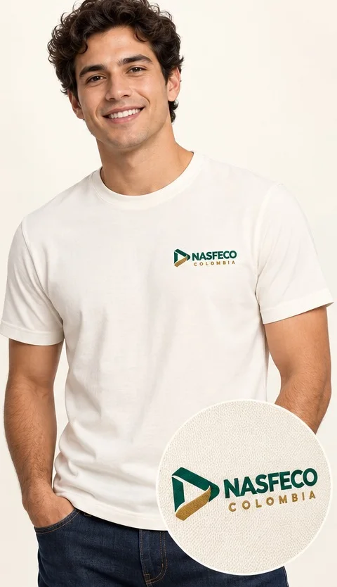
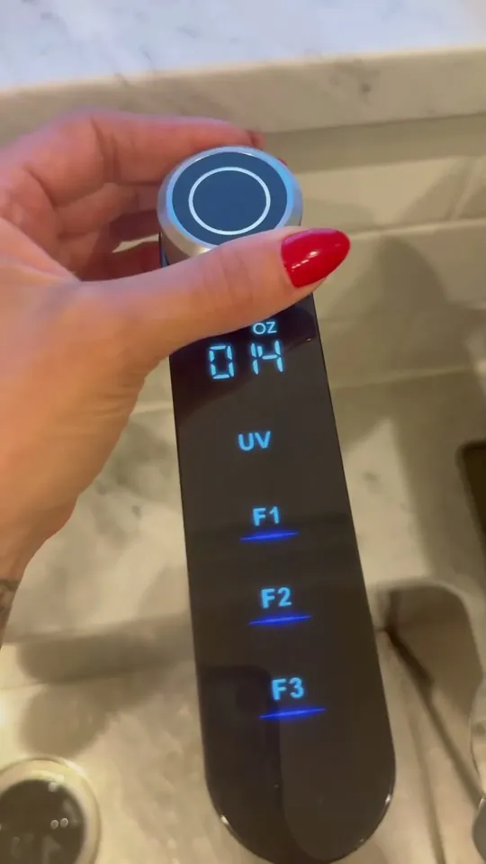
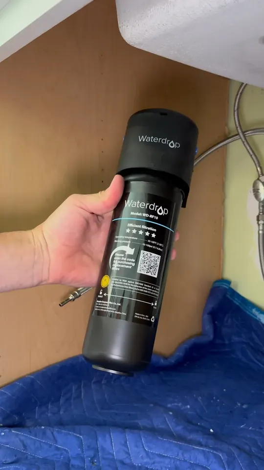

Lo que compras

Waterdrop X12 o UF
- Equipo original Waterdrop Filter
- Con su llave dedicada
- Certificado NSF/ANSI
 Distribuidor oficial en Colombia
Distribuidor oficial en Colombia
Nasfeco Colombia · Medellín
Purificadores Waterdrop Filter instalados en tu casa en Medellín. Tú eliges el equipo; nosotros revisamos tu cocina, lo instalamos, te damos tu kit de bienvenida y seguimos pendientes.
Lo que compras
Lo que te damos

Equipo + servicio Nasfeco = un solo precio en pesos, IVA incluido
01 · Elige tu equipo
Waterdrop Filter hace el equipo; Nasfeco se encarga de todo lo demás. Precios finales en pesos colombianos, con IVA y la instalación en Medellín.
Waterdrop Filter · instalado por Nasfeco
Ósmosis inversa sin tanque de 11 etapas, minerales alcalinos y llave inteligente. Quita sarro, metales y sales disueltas.
Sin electricidadAhorras
Waterdrop Filter · instalado por Nasfeco
Membrana de 0.01 μm que quita cloro, sedimentos y bacterias y conserva los minerales. Sin luz y sin desperdiciar agua.
02 · Hecho para nuestra cocina
En la casa paisa el agua está en todo: el tinto, los jugos, la aguapanela, la arepa. Con un purificador todo eso sabe a lo que tiene que saber.
El café colombiano es de los mejores del mundo. No lo dañes con agua que sabe a cloro.
Lulo, maracuyá, mora, guanábana: el jugo de la casa queda más rico con agua pura.
Para la aguapanela con limón, el chocolate con queso y la arepa de las onces.
La olla grande de la familia también merece agua sin sedimentos ni cloro.
03 · Por qué Nasfeco
Comprarlo por tu cuenta
Con Nasfeco
Lo único que haces tú
Todo lo que hace Nasfeco
04 · Tu bienvenida
Cada instalación Nasfeco termina con este kit, sin costo adicional. Porque el agua pura también se lleva pa' la calle.
De lona, con asas verdes y el bordado Nasfeco Colombia. Pa' la finca, el mercado o el día a día.
Térmica, con la personalización Nasfeco, para llevar tu agua pura al gimnasio, a la U o a la oficina.
Verde esmeralda, con textura y el logo Nasfeco bordado en dorado.
Incluido con la X12 y con la Ultrafiltración UF. Owala es una marca de su fabricante; Nasfeco aparece como personalización.

05 · Quién llega a tu casa
Nada de desconocidos con una caja de herramientas. Llega alguien de Nasfeco que conoce tu equipo y responde por su trabajo.
Llega con la camiseta Nasfeco Colombia y una credencial con su nombre, pa' que sepas quién está en tu puerta.
Conoce la X12 y la UF: espacio, conexiones, llave y la primera prueba.
Conoce la ciudad, el agua de EPM y cómo son las cocinas de los edificios y casas paisas.
El mismo equipo valora tu cocina, instala, te enseña a usar el equipo y te hace seguimiento.
06 · Así instalamos
¡Hola! ¿El purificador cabe bajo mi lavaplatos? Te mando foto pues. 📷
¡Hola! Te escribe Nasfeco. Con mucho gusto revisamos tu espacio y lo cuadramos contigo.
Nos cuentas de tu casa, tu rutina y tus dudas. Te responde una persona de Nasfeco, aquí en Medellín.
Antes de instalar confirmamos la compatibilidad y te dejamos por escrito el alcance y cualquier adaptación.
Sin obras ni perforar paredes. El equipo queda ordenado bajo tu lavaplatos.
Servimos juntos el primer vaso y te mostramos cómo funciona el equipo.
Te entregamos tu kit Nasfeco: bolso, botella Owala personalizada y toalla bordada.
Seguimiento, orientación y recordatorios de mantenimiento. Siempre sabes a quién llamar.
Videos oficiales de Waterdrop Filter (X12). El alcance y cualquier adaptación se confirman en tu valoración.
Qué incluye
Tu equipo + todo esto
Pesos colombianos, IVA del 19 % incluido. Instalación estándar en Medellín. Cualquier trabajo adicional se acuerda contigo antes, por escrito.
Calcula tu ahorro
Haz la cuenta en 10 segundos y compárala con tener agua pura en tu propia cocina.
Ajusta los valores a lo que compras normalmente.
Cálculo referencial en pesos. El botellón viene en $12.000 como referencia {{confirmar precio en Medellín}}: cámbialo por el que pagas. No incluye el mantenimiento de los filtros.
Míralos en acción
Shorts de Waterdrop Filter y de usuarios. Si aceptas las cookies, se reproducen solos y sin sonido; toca uno para escucharlo.

Este video está en YouTube, que usa cookies.

Este video está en YouTube, que usa cookies.
07 · Somos de aquí
En la ciudad de la eterna primavera el agua de la red, que distribuye EPM, es potable y de buena calidad. Aun así, el cloro que la mantiene segura se nota en el sabor, y en muchos edificios pasa por tanques donde se pueden acumular sedimentos. Un purificador lo resuelve justo antes de tu vaso.
Instalamos en todas las comunas
En los corregimientos (Santa Elena, San Antonio de Prado, San Cristóbal, Altavista y Palmitas) lo coordinamos contigo. Por ahora no instalamos fuera de Medellín.
08 · Preguntas
¿Te quedó alguna duda? Escríbenos con toda la confianza.
Pregúntanos por WhatsAppSí. Nasfeco es distribuidor oficial de Waterdrop Filter en Colombia. Los equipos que instalamos son originales, con garantía y soporte local.
Hoy instalamos en las 16 comunas de Medellín, y en los corregimientos lo coordinamos contigo. Por ahora no instalamos en otros municipios del valle de Aburrá; si vives en Envigado, Sabaneta, Itagüí o Bello, escríbenos y te avisamos cuando lleguemos.
Si quieres la máxima pureza (quitar sarro, metales y sales disueltas), la X12; necesita tomacorriente bajo el lavaplatos. Si el agua te llega bien y lo que buscas es mejor sabor sin gastar luz ni desperdiciar agua, la UF.
El precio es final, en pesos y con IVA del 19 %: el equipo con su llave original, la valoración de tu cocina, la instalación estándar en Medellín, el kit de bienvenida y el seguimiento.
El agua de EPM llega potable, pero el cloro se nota en el sabor y en las tuberías y tanques de los edificios se pueden acumular sedimentos. Un purificador quita todo eso justo antes de tu vaso.
El espacio bajo el lavaplatos, la toma de agua, el desagüe, dónde va la llave y, para la X12, el tomacorriente. También si la administración del edificio pide alguna autorización. Cualquier adaptación se acuerda antes.
En la X12, entre 6 y 24 meses según el filtro; en la UF, hasta 12 meses. El equipo te avisa y nosotros te recordamos cuándo toca.
No tienes que hacer nada: el código de la oferta va escrito en tu solicitud de WhatsApp. Vale hasta que termine la cuenta regresiva.
Envías tu solicitud por WhatsApp y un asesor te confirma la fecha y las formas de pago {{confirmar: Nequi, Daviplata, PSE, transferencia o tarjeta}}. En esta web no se cobra nada.
Nasfeco S.A.S.. La gestionamos aquí en Colombia, conforme al Estatuto del Consumidor (Ley 1480 de 2011): si algo falla, nos escribes y lo resolvemos sin que tengas que tratar con el exterior.
Tu casa. Tu ritmo.
Agenda tu valoración y cuadramos contigo tu experiencia Nasfeco, paso a paso.
CookiesSolo usamos el almacenamiento imprescindible para que la web funcione. Los videos de YouTube colocan sus propias cookies, así que solo se cargan si aceptas; lo mismo con la medición de anuncios, si la activamos. Puedes cambiar tu elección desde el pie de página. Política de cookies